Тальцинский на Первомай 2007
- закрытие зимнего сезона -
28-29 апреля -
30 апреля -
1
Мая + Клюква -
еще фоты
"Собственно, предложение уже прозвучало в теме...
А аргументов тому несколько...
Во-первых, хочется катаЦЦа, что является самым весомым аргументом...
Во-вторых, нормальные выходные выкраиваются только на Первомай,
так
как 9 мая - среда, и из-за него неделю перекраивать не будут.
В-третьих, Мунка каждый год - становится скучновато (но это сугубо мое
мнение).
К тому же "в свете новых правил" попадание в тот
район стало
сопряжено с определенными трудностями, решаемыми, но все-таки...
И если хоть кто-нибудь поддерживает вышесказанное и готов
пойти против
многолетней традиции - ай да на Тальцинский,
ибо только организованной
толпой мы сможем его дотропить..."
S-king , Константин Шишкин. Из форума Angara.net
Лично меня вывел из календарного кретинизма второй аргумент,
ведь и правда, на 9 мая не получится три выходных дня! Плюс еще несколько
аргументов и фактов личного плана и в недельном выборе "Мунку
vs Тальц" победил родной и близкий сердцу...
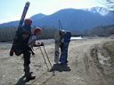
Затропить в цирк Тальцинского на 1-е - задача не из простых. Первомайские
первопроходцы прошлых лет рассказывали страшные истории о "глубоком
и нежном снеге" и советовали оптом скупить все снегоступы в округе,
а еще лучше - тропить 9-го. Так что в этот раз все учаснеги авантюры
хоть и не были поголовно обуты в снеготапочки, но морально все были
готовы к грандиозному тропилову. Однако, самое трудное и интересное
прошло стороной по воле небес!
Каково было удивление Андрея, Жени и Гила, вышедших утром 28-го за ворота
турбазы, и не нашедших снега, я точно не знаю. Но предполагаю, что оно
было приятно-вопросительным - "Тропить ноль! А кататься где?"
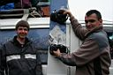
Остальные
учаснеги вечером 28-го ехали из Иркутска в микроавтобусе, как будто
специально приспособленном для перевозки фрирайдероф - заснеженные горы
на окнах, вмещающий всю снарягу багажник и понимающий водитель. 14 человек
в 12 часов ночи, тепло. Организатор выезда Костя Шишкин почувствовал
приближение дождя, посовещался с народом и решил ночевать на турбазе.
Чай на плите, 4х местные нумера без постельного белья, бильярд в холле
и все нехитрые удовольствие за 250 рэ с каждого. Пончики и брусничный
чай на сон грядущий.
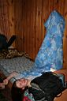
29
апреля. 6 утра, за стенкой веселая мелодия звонка (люди, дайте переписать!),
а за окном шум дождя. Все спят дальше...
7 утра, веселится уже мой будильник, остальное без изменений...
8 утра, народ начал просыпаться, а дождь утихать...
9 утра, сдвигаются столы на кухне, все дружно завтракают...
В 10 выходим. Тропить было нечего, снег скромно показывался небольшими
островками, поэтому развлекались кто чем - обходили обгоревшую машину
стороной, форсировали ручей по бревнам, прятали снегоступы, штурмовали
поваленный тополь, играли в следопытов...
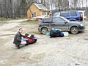
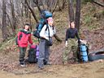
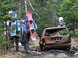
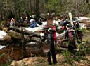
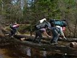
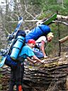
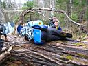
Два-три часа ходу до Танцплощадки, кто во что горазд.
Погода - переменная облачность, без дождя, местами клещи. На траверсе
присели передохнуть на камнях, солнце так пригрело, что парафин на скользяке
начал плавиться. На Бабе ночевали первозаходяги - Андрей, Женя и Гил
- сманили их в верхний лагерь. Тропежка началась на подъеме, который
после лавинного поля, и дальше до Подушки. Местами снег плотный, а местами
и проваливались. В общем, как надо, а то заход бы получился не зачетный
:)
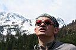
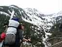
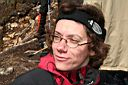
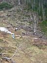
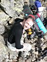
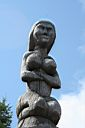
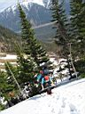
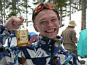
Три часа дня, точное
попадание в лагерь, ярило в шар, можно одевать шорты и ставить палатки.
Пока пили пиво, вермут, коньяк и общались за заход, пока варили скорый
обед, подтягивался остальной народ и затягивалось небо. Пробросило снежком.
Особо жаждущие катания стартанули вверх. Остальные обживали палаточный
городок и отдыхали.
Наверху снежная обстановка была вполне пригодна для катания, однако
количество снега напоминало первую половину июня прошлого сезона! Кулуар,
по которому шла тропа в цирк, пестрел камнями и проплешинами.
Козырьков на гребне почти нет, на склонах лавинные выносы, старые и
свежие, маленькие и приличные. В нескольких местах было видно, что отломившийся
козырек спровоцировал сход доски. Было видно... Потом не было... Сплошное молоко. На гребень не тропили, стоим под гребнем на пологом участке, на балконе, ждем прояснения. Уже все ништяки подъедены, весь чай выпит, групповуха ежиков в тумане сфотографирована. Дождались луч света, пааеехали!
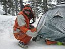
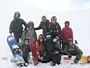
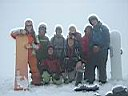
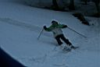
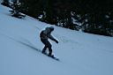
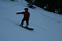
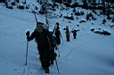
Приехали под Шаман-гору, опять туман, скучковались и опять ждем в молоке. Разговорчики ведем. Основная тема - скользит доска по снегу или нет, потому как не у всех запарафинено, а снежок уже того... "Вы где???" - голос из тумана заходящего в цирк народа. "Мы тут?" - "Не вижу!" - "Иди сюда!" - "Куда???". Снова прояснение, скоренько встегнулись и дунули к лагерю. Кто в палатки попал, а кто и ниже уехал. Решили догнаться и катануть еще, но уже вниз, вдоль тропы в лагерь. Прихватили еще несколько человек, скучающих в лагере :) И догнались! Правда часть народа немного не туда укатила и схватила елкинга, а точнее стланинга :)
Вот и первый день прошел. Вечером гитара у костра. Гитарист Костя Шишкин, а вот кто был костровой простите точно не знаю, но большой уважуха копавшим яму и разжигавшим огонь. Немного нюхнул дымку и спать пошел, мне на сегодня хватило впечатлений :)
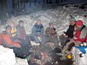
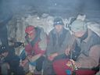
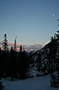
Продолжение здесь - 30 апреля, Жгунск
Май 2007
Текст : Алексей Белокрылов
Фото : Ксения Шультайс, Константин Шишкин,
Андрей Савченко, Михаил Мецик, Наталья Хромовских
Тальцинский 9 мая
2005
Тальцинский 9 мая 2006